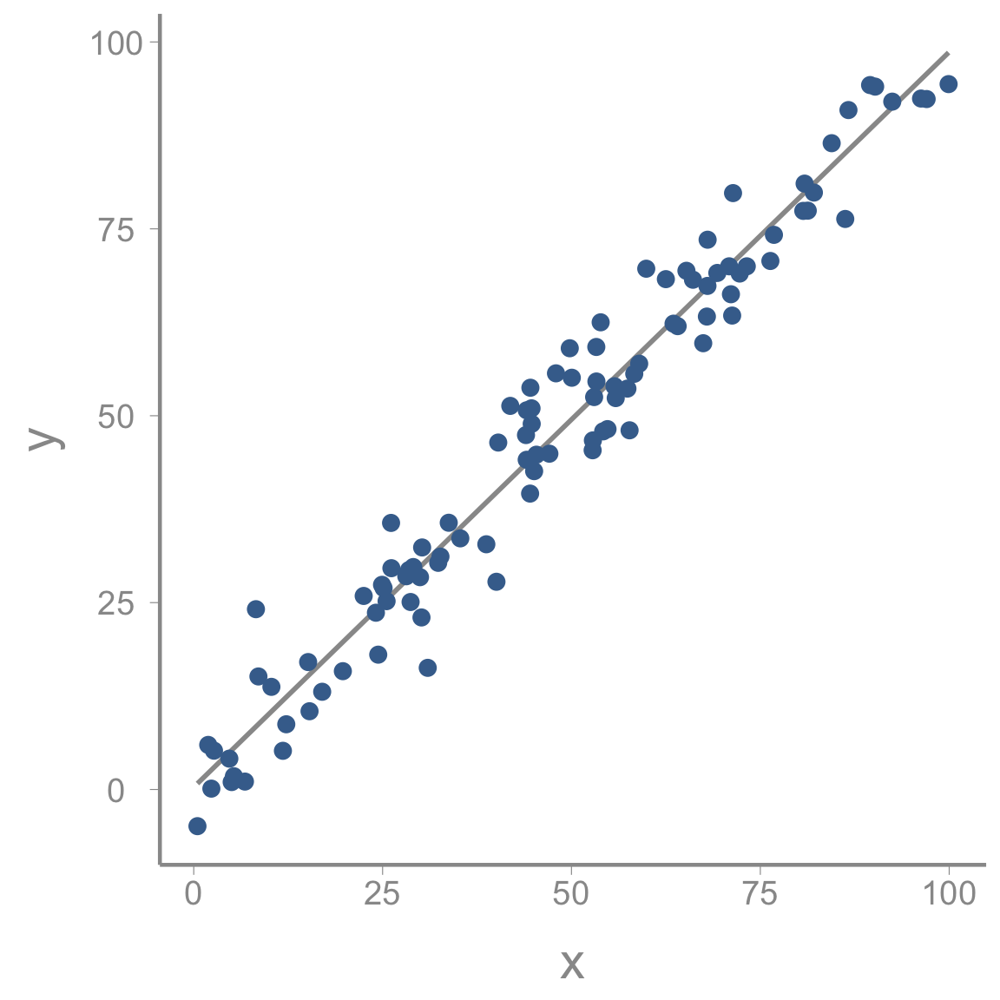
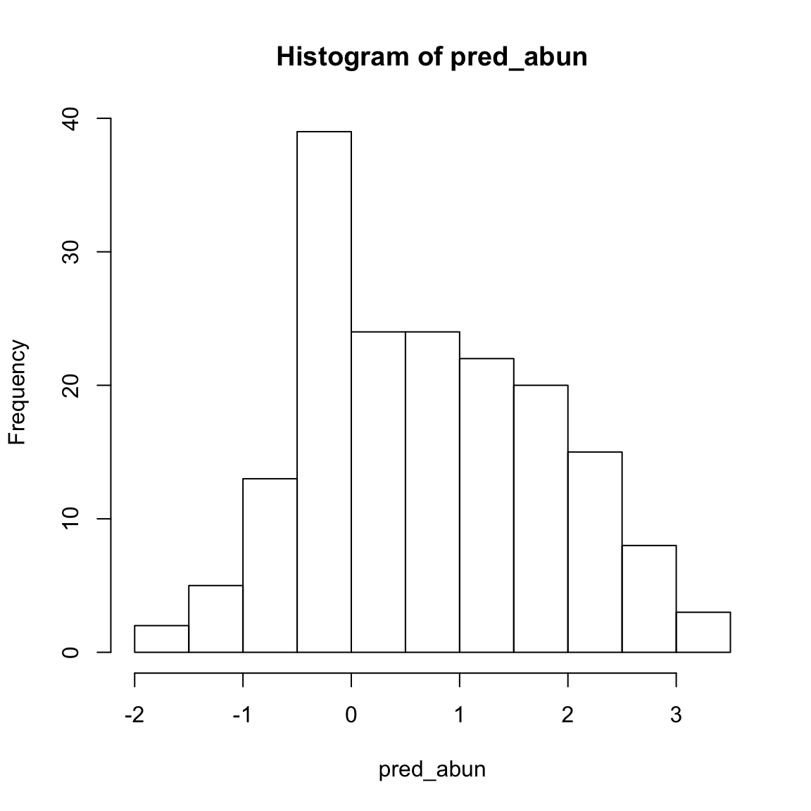
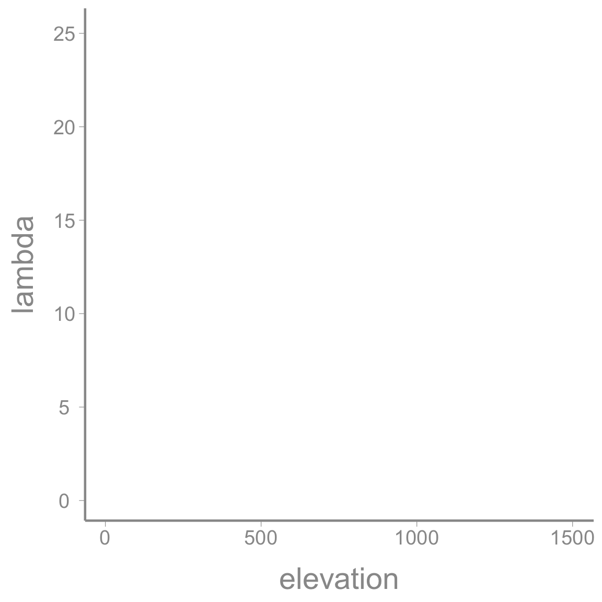
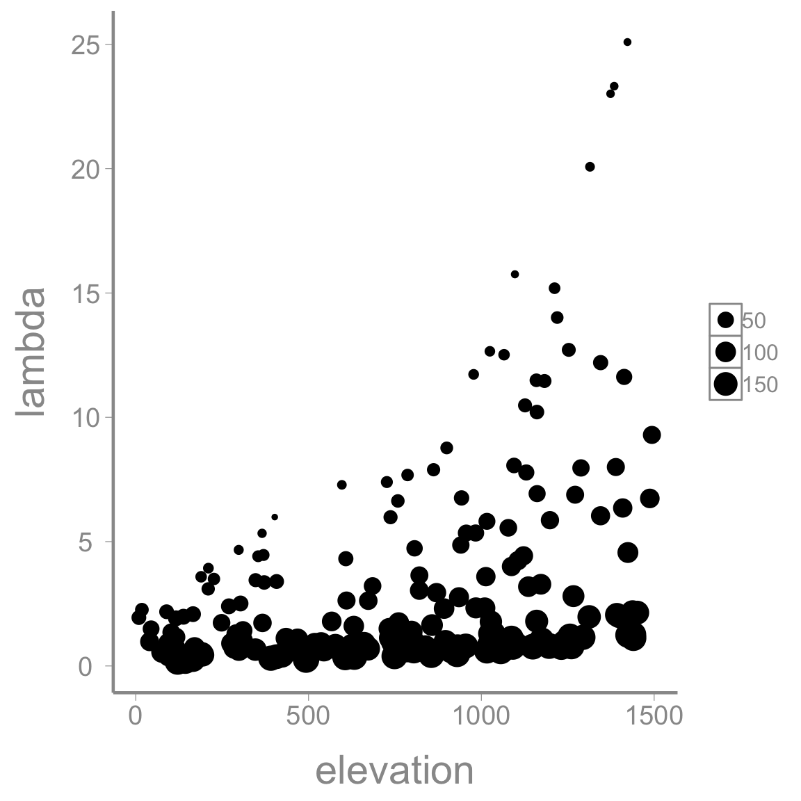
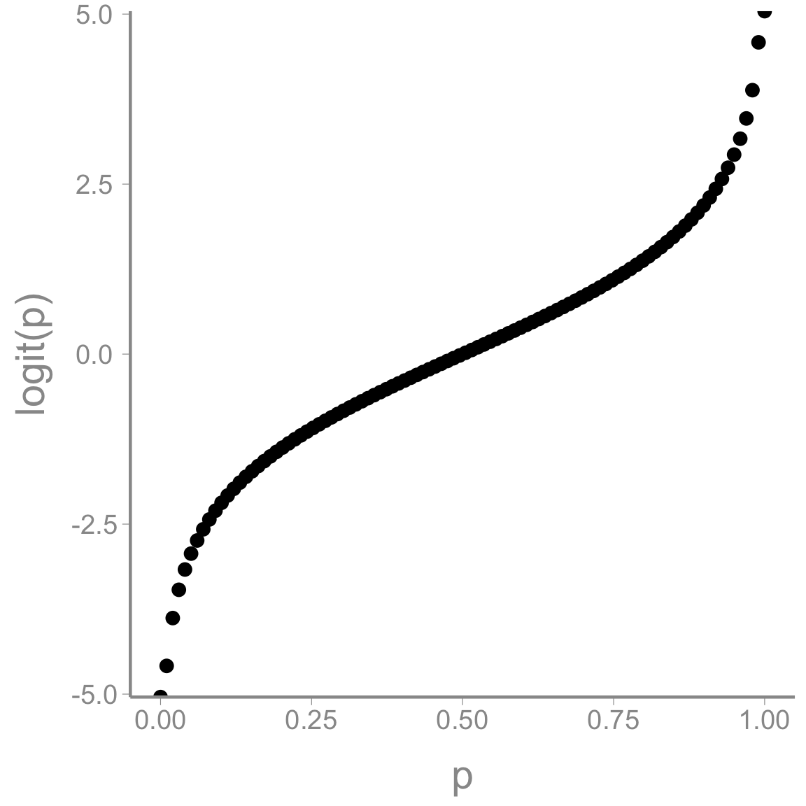
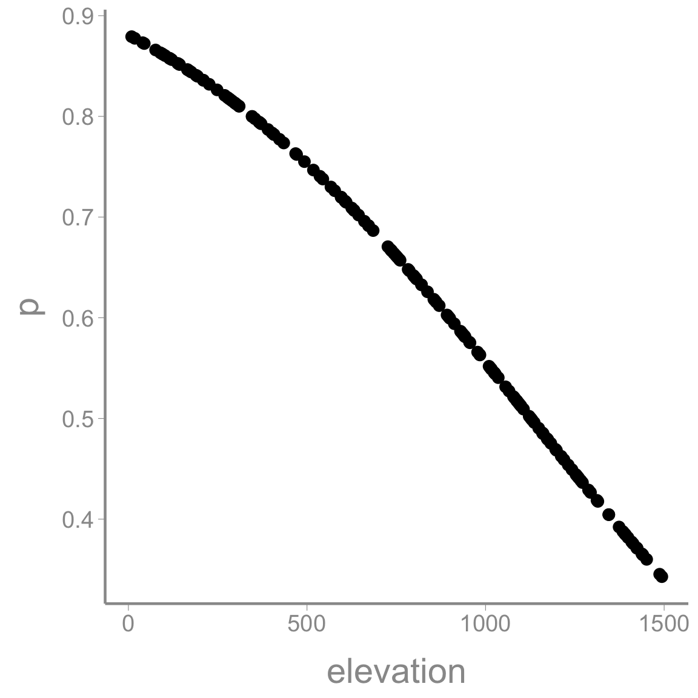
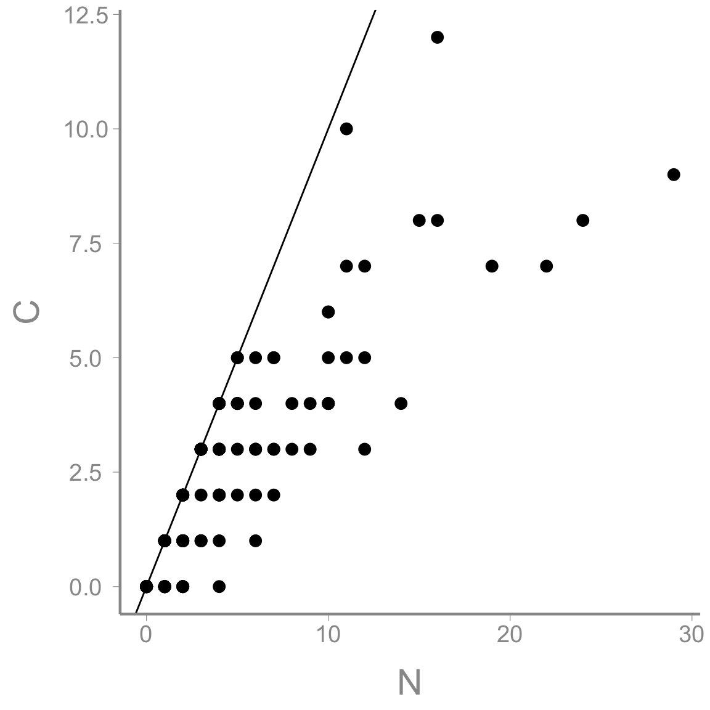
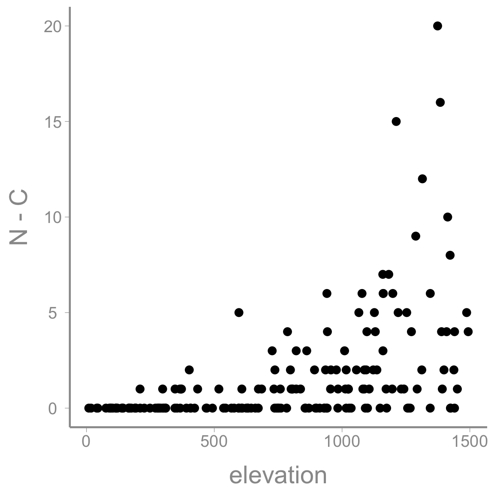

Intro to data simulation and visualization
WILD6900
2019-01-17
simulation.RmdObjectives
Prepare raw data for analysis using reproducible code
- Learn/review basic data manipulation tasks, including:
- Creating tidy data frames
- Subsetting observations
- Joining data frames
- Sorting data frames based on specific column values
- Adding new variables
- Working with dates
- Performing operations on grouped data
- Create summaries of raw data
- Saving data
-
Rfunctions used in this exercise:
What is data simulation
Data simulation is a technique for generating random data from stochastic processes with known parameters. Although not framed as “data simulation”, we have already done this several times this semester. For example,
Is a simple data simulation to generate random variables from a normal distribution with known mean (\(\mu=3\)) and variance (\(\sigma^2=0.75^2 = 0.5625\)).
In this exercise, we’ll learn about simulating data under more complex models that are similar to the ones you might use to analyze your data. For example, imagine a simple single-season occupancy model with the probability of occupancy \(\psi=0.75\) and detection probability \(p=0.4\). In other words1:
\[z_i \sim Bernoulli(\psi)\]
\[y_i \sim Bernoulli(z_i \times p)\]
We can simulate a data set from this model using a few lines of R code:
nSites <- 100 # Number of sites
psi <- 0.75 # Occupancy probability
p <- 0.4 # Detection probability
z <- rbinom(n = nSites, size = 1, prob = psi) ## Generate true state of each site;
## nb Bernoulli = binomial with size = 1
y <- rbinom(n = nSites, size = 1, prob = z * p) ## Generate observationsWith those five lines of code, we now how a fake data set that could be fed into an occupancy model to estimate \(\psi\) and \(p\).
Why simulate data?
At first, it may seem strange to generate a fake data set just so we can run it through a modeling exercise to get answers we already know. But data simulation is a powerful technique in your toolbox as an ecological modeller. There are a number of reasons data simulation is useful2:
Thruth is known: Usually when we apply a model to data, we don’t know the true parameter values that generated the data. In this case, you may be able to fit the model but you’ll never know if it got the right answer. With simulated data, you can check whether your model returns the known parameter values. This is a useful way to make sure you code is doing what you think it’s doing.
Sampling error: As we already learned, sampling error is an inherent part of any ecological analysis. The noise that results from sampling error makes it harder to detect the true signals in our process model. With real data, you only have a single data set, which makes it hard to understand the effect of sampling error on your inference. With simulated data, you can generate hundreds or even thousands of data sets from the same process/observation models, allowing you to observe the effects of sampling error directly.
Check characteristics of estimators: Related to point 1, with a complex model and just a single data set it’s difficult to determine whether the estimators you are using are well-behaved; that is, do they return estimates that are unbiased and precise. With simulated data, you can directly quantify these properties.
Power analysis: By varying the effect sizes and sample sizes in your simulated data, you can easily perform power analyses. Using simulated data in this way can be very useful for designing field studies or helping to interpret inferences after data has been collected and analyzed.
Check identifiability/estimability of parameters: In Bayesian models, we can always obtain posteterior distributions for every parameter in our model. However, these posteriors are not always useful. In some cases, our data may provide little-to-no information about the value of a parameter and therefore the posterior distribution for this parameter will simply be determined by the prior. This lack of identifiability may be caused by instrinsic properties of our model (for example, if two parameters are completely confounded such that different combinations of parameter values have the same likelihood) or because our data do not provide enough information to estimate all parameters in the model (for example, a regression model with dozens of predictors but few observations). Although there are rigorous methods for testing instrinsic identifiability, this task can be extremely difficult for complex hierarchical models. Simulated data allow you to check whether all parameters in your model can be estimated by generating replicate data sets that have the same properties (sample size, etc) as your data.
Check robustness to violations of model assumptions: All models have assumptions about how the data were generated. These assumptions stem from the way we formulate the process and observation models. Of course, most assumptions will be violated to some degree in real data sets. With simulated data sets, we can generate data that we know violate the assumptions of the model in one or more ways (e.g., generating heterogeneous survival probabilities for a model that assumes constant survival). By comparing the parameters estimates from these “mis-specified” data sets, we can gauge the degree to which our inferences are sensitive to violations.
Better understand your model: One good way to test whether you really understand your model is to see if you can write the code to simulate data under the model. In many cases, this exercise will uncover misunderstandings or lack of understanding about what the model is actually doing. Simulating data is also a good way to make sure you understand what each parameter in your model actually represents. If you can simulate data from each part of the model, chances are you can also figure out why your model may not be working the way you think it does. In short, simulating data is a great way to develop a deeper understanding of your model.
Simulating count data
In this exercise, we will simulate and visualize data generated under very general process and state models. We will simulate the data assuming a “glm” type formulation with covariates effecting both the abundances as well as the observed counts (apropos of point 7 above, we will also use this example as a brief review of glm’s).
Because I’m probably too guilty of being animal focused, we will assume these counts are generated a part of a study documenting the distribution of a rare orchid. Because we’re making this up as we go, we’ll assume this rare orchid prefers high elevation sites that receive little rainfall each year. Therefore, we expect abundance to increase with increasing elevation and decrease with rainfall. To estimate abundance, we conduct \(M\) replicated counts at \(J\) sample plots. For the process model, we will assume
\[N_i \sim Poisson(\lambda_i)\]
where \(N_i\) is the true abundance at site \(i\) and \(\lambda_i\) is the expected abundance3. To model the elevational and rainfall relationships, we incoporate those predictors on the (log) expected counts (we will review why we use the log counts shortly). Therefore:
\[log(\lambda_i) = \beta_0 + \beta_1 \times elevation_i + \beta_2 \times rainfall_i\]
where \(\beta_0\), \(\beta_1\), and \(\beta_2\) are regression coefficients that govern the relationship between abundance, elevation, and rainfall.
Even though these are plants, they are small and cryptic so no matter how hard we search on the study plots, it is likely that we won’t find every plant. That is, the probability of detecting each plant \(p < 1\). Let’s assume detection probability is lowest at high elevations because our oxygen-deprived brains are bad at searching at high elevations. For the observation model, we will assume:
\[y_{i,j} \sim Binomial(N_i, p_{i,j})\]
and
\[logit(p_{i,j}) = \alpha_0 + \alpha_1 \times elevation_i\]
where \(y_{i,j}\) is the number of individuals counted at site \(i\) during count \(j\), \(p_{i,j}\) is the site/occasion specific detection probability, and \(\alpha_0\), \(\alpha_1\), and \(\alpha_2\) are regression coefficients that govern the relationship between detection probability and elevation. Again, we will briefly review why we model detection probability on the logit scale shortly.
Initial steps: Setting the model parameters
The first step to simulating data is to set the fixed values that are needed to generate the stochastic data. This usually includes the sample size, number of visits, covariate and parameter values and any other fixed value relevant to the analysis. In this case, we’ll first set the number of sites and number of visits:
Next, we need to generate the covariate values, in this case elevation and rainfall. Notice that both elevation and rainfall are site-level covariates; they get a single value for each site. For this reason, we’ll treat elevation and rainfall as vectors of length \(M\). For now, we’ll assume our sites vary from sea-level to 1500m in elevation and rainfall varies from 0mm to 200mm per year. We’ll further assume that the predictors are independent (which is probably not realistic but we will ignore correlations among predictors for now)
sim_df <- data.frame(elevation = runif(M, min = 0, max = 1500),
rainfall = runif(M, min = 0, max = 200))In most analyses, it is good practice to scale covariate values so they have a mean of 0 and do not extend too far above and below 0 (very large values (positive or negative) can create numerical issues when fitting models). So next we center and scale the covariates (we’ll do it manually but it could also be done using the built-in function scale() or by simply simulating data from a normal distribution in the first place):
sim_df <- dplyr::mutate(sim_df, elevation.c = (elevation - mean(elevation))/sd(elevation),
rainfall.c = (rainfall - mean(rainfall))/sd(rainfall))You can check that these now have mean = 0 and sd = 1.
Finally, we need to set the parameter values for the regression models. This is where understanding what each parameter represents is very helpful. For example, \(\beta_0\) is the expected number of orchids (on the log scale) when the other covariates have a value of 0 (because we centered elevation and rainfall, we interpret \(\beta_0\) to be the expected abundance at the mean elevation and rainfall rather than at sea-level and 0mm of rain). Thinking about counts on the log scale is hard so we’ll set this value on the abundance scale and then transform to get \(\beta_0\):
mean.lambda <- 2 # Mean expected number of orchids
(beta0 <- log(mean.lambda)) # Log expected number of orchids (intercept)
#> [1] 0.6931We can do the same thing with \(\alpha_1\), which is the (logit) expected detection probability at the mean elevation:
Now we set the other regression coefficients. We have already said the \(\beta_1\) is positive (abundance increases with elevation) whereas \(\beta_2\) and \(\alpha_1\)are negative (abundance decreases with increasing rainfall; detection probability decreases with increasing elevation). All that’s left is to decide specific values. I recommend playing with these values a bit to get a feel for effect sizes on the log and logit scales. Both \(\lambda\) and \(p\) are derived variables based on the regression models and it’s not always obvious what values of the regression coefficients will generate reasonable abundances and counts. Simulating data under different effect sizes is a good way to build intuition about what a “large” effect size is in glms.
Generate expected abundances/review of (generalized) linear models
To generate the simulated abundances at each site, we first have to calcuate \(\lambda_i\), the expected abundance at each site. If this is confusing, remember that a linear model is composed to two parts:
\[response = deterministic\; part+stochastic\; part\]

In the figure above, the line in the deterministic part of the model – the predicted value of \(y\) for a given value of \(x\). It’s deterministic because for a given value of \(x\), it will always return the same predicted value of \(y\). In our abundance model, \(\lambda_i\) is the deterministic part of the model – the predicted abundance of the orchid at a specific combination of elevation and rainfall.
We get these values by simply plugging in the observed elevation and rainfall values for each site to our linear model:
\[\begin{bmatrix} response_1 \\ reponse_2 \\ response_3 \\ .\\ .\\ .\\ response_M \end{bmatrix} = \begin{bmatrix} 1 & elevation_1 & rainfall_1\\ 1 & elevation_2 & rainfall_2 \\ 1 & elevation_3 & rainfall_3 \\ . & . &.\\ . & . &.\\ . & . &.\\ 1 & elevation_M & rainfall_M \end{bmatrix} \times \begin{bmatrix} \beta0 & \beta1 & \beta2 \end{bmatrix}\]
If you remember matrix algebra, multiplying the covariate matrix by the coefficient matrix is the same as doing:
\[1 \times \beta0 + elevation_i \times \beta1 + rainfall_i \times \beta2\]
The matrix of predicted responses is called the linear predictor. Notice that when we calculate the linear predictor for our data, some of the predicted abundances are negative:

In our model, this makes no sense – abundance can’t be negative. However, note that if we take \(e^{response}\) we end up with positive values:

This is why our linear model refers to \(log(N)\) rather than \(N\)4. In the case, log() is called the link function and this is what makes our model a generalized linear model.
Now that we have a refreshed our memory of the basic glm structure, let’s add the predicted abundance for each site to the data frame:
Plot relationships
Whenever you simulate data, it’s very useful to plot your data early and often. As we mentioned above, it’s often difficult to know ahead of time exactly what response values a complex model will produce. Plots are a great way to quickly assess whether the simulation is producing values that are consistent with your domain expertise.
Brief intro to ggplot2
To be consistent with our use of the tidyverse, we will create plots using ggplot2().
The power and flexibility of ggplot2 come from it’s consistent structure. Although a bit overwhelming at first, once you get the hang of it the structure actually makes it quite easy to create highly customized publication-quality graphics. All plots created using ggplot2 use the same underlying structure:
\[\underbrace{ggplot}_{initiate\; plot}(\underbrace{data = df}_{data\;frame},\; \underbrace{aes(x =\; , y = \;)}_{plot\; attributes}) + \underbrace{geom\_line()}_{geometry}\]
The ggplot() function initiates a new plot. In this function, you tell ggplot2 what data frame you will be using for the plot and you tell it how to map attributes of the data to the visual properties of the figures. Attributes are mapped inside the aes() argument. Attributes usually include location (x-axis and y-axis placement), color, size, shape, line type, and many others. In general, each attribute will be mapped to one column of your data frame.
The ggplot() function simply initiates a graph but if you run just that portion of the code you will get a blank graph. We can see that by creating a new plot showing the relationship between elevation (the x-axis of the plot) and predicted abundance (the y-axis):

You can see that ggplot created a figure with the correct axes and labels. But no data. That’s because we didn’t tell ggplot what type of geometry to use to represent the data. Geometry refers to the actual type geometric object(s) we want to use to display the data. Common geometries include points (e.g., scatterplot), lines (e.g., timeseries), and bars (e.g., histograms). There are many others. Once we add a geometry, we can see the data:

Going back to the aes() argument, we can use other attributes to disply additional information in our graph. For example, we could also show the rainfall at each location by scaling the size of the points to the rainfall:

So we can see that our model predicts abundances ranging from 0.1792 individuals to 26.9107 individuals. Is that reasonable? Who knows, this is a made up species. But it wasn’t, this would be a good time to go back and play with different parameter values to generate abundances that are consistent with our domain expertise.
Generating the actual abundances
So far, our simulated abundances contain no stochastic variation (the rainfall and elevation covariates are stochastic but given those values, the predicted counts are completely deterministic). To create a realistic data set, we need to add some process variance (\(\sigma^2_p\)). In some simulations, this would involve setting another parameter that controls the amount of process variation. For example, we might generate data from a normal distribution with mean equal to the expected value and standard deviation chosen to reflect our belief about how much process variation to expect in our system.
However, because we are generating counts from a Poisson distribution, the process variance is chosen for us 5. So simulating the abundances is straightforward:
### Generate actual abundance for each site
sim_df <- dplyr::mutate(sim_df, N = rpois(n = M, lambda))
### Plot lambda vs. N
ggplot(data = sim_df, aes(x = lambda, y = N)) + geom_point() +
scale_x_continuous(expression(lambda[i])) +
scale_y_continuous(expression(N[i])) +
geom_abline(slope = 1, intercept = 0)
As expected, abundance increases with \(\lambda\), though you can see the process variation that is added to the model at this stage.
Go back to lecture 1 and be sure you understand how our simulation steps reflect the process model we learned about in that lecture.
Which step defined the process model? What is the process model
Which step defined the process variation? What is the difference between \(\lambda_i\) and \(N_i\)?
Simulating the counts
Now that we have the true abundances for each site, we can simulate the counts. The steps are pretty much the same as above but now applied to the observation model rather than the process model.
Generate the detection probabilities
Just as the expected abundances were not the same for all sites, neither are the detection probabilities. To calcuate the detection probability at each site, we use the same glm framework as above but this time using a different link function.
For the abundances, we used the \(log\) link function because it converts the linear predictor into positive values (counts can be negative). For \(p\), we need to generate values that are between 0 and 1 which means we need a different link function. Although there are several options, the most common link function for probabilities is the \(logit\) link:
\[logit(p)=log\bigg(\frac{p}{1-p}\bigg)=log(p)-log(1-p)=y\]

To convert the linear predictor into a probability we use the inverse logit (just like we used \(e^y\) to estimate the predicted abundance from the linear predictor of the count model):
\[logit^{-1}(y)=\frac{1}{1+e^{-y}}=p\]
We can use these relationships to add both \(logit(p)\) and \(p\) to the dataframe:
sim_df <- dplyr::mutate(sim_df, logit.p = alpha0 + alpha1 * elevation.c,
p = 1/(1 + exp(-logit.p)))
ggplot(sim_df, aes(x = elevation, y = p)) + geom_point()
Add the counts
Now we are ready to generate the final piece of simulated data, the actual counts. The binomial observation model we defined above tells us exactly how to do that:
sim_df <- dplyr::mutate(sim_df, C = rbinom(n = M, size = N, prob = p))
ggplot(data = sim_df, aes(x = N, y = C)) + geom_point() +
geom_abline(slope = 1, intercept = 0)
The figure confirms that \(C \leq N\) in all cases, which is another good check that we simulated the data correctly (we only allowed false negatives so the counts cannot be bigger than the true abundance).
In some cases, it appears that \(C=N\), especially when \(N\) is small. Remember that \(N\) is smaller at low elevations, which is also where detection probability is the highest. Let’s make another quick plot to check that this is the case. To do this, we’ll plot \(N-C\) against elevation based on the prediction that this difference should get bigger as elevation increases:

Save the simulated data
Now that we have a simulated data set, let’s save it so it’s available for future use. There are many ways to save objects in R but one of the most well-behaved is saveRDS().
When you want to use this object in the future, all you have to do is run6:
\[[N_i, \beta_0, \beta_1, \beta_2, \alpha_0, \alpha_1|y_i, elev_i, rain_i] \propto [y_i|N_i,\alpha_0, \alpha_i, elev_i][N_i|\beta_0, \beta_1, \beta_2, elev_i, rain_i][\beta_0][\beta_1][\beta_2][\alpha_0][\alpha_1]\]
\[[N_i, \beta_0, \beta_1, \beta_2, \alpha_0, \alpha_1|y_i, elev_i, rain_i] \propto \prod_{i=1}^M \prod_{j=1}^J binomial(y_{i,j}|N_i,\alpha_0, \alpha_i, elev_i) \times Poisson(N_i|\beta_0, \beta_1, \beta_2, elev_i, rain_i) \times normal(\beta_0|0,100) \times normal(\beta_1|0,100) \times normal(\beta_2|0,100) \times normal(\alpha_0|0,100) \times normal(\alpha_1|0,100)\]
\[[N_i|.] \propto \prod_{i=1}^M \prod_{j=1}^J binomial(y_{i,j}|N_i,\alpha_0, \alpha_i, elev_i) \times Poisson(N_i|\beta_0, \beta_1, \beta_2, elev_i, rain_i)\] \[[\beta_0|.] \propto Poisson(N_i|\beta_0, \beta_1, \beta_2, elev_i, rain_i) \times normal(\beta_0|0,100)\]
\[[\beta_1|.] \propto Poisson(N_i|\beta_0, \beta_1, \beta_2, elev_i, rain_i) \times normal(\beta_1|0,100)\]
\[[\beta_2|.] \propto Poisson(N_i|\beta_0, \beta_1, \beta_2, elev_i, rain_i) \times normal(\beta_2|0,100)\]
\[[\alpha_0|.] \propto \prod_{i=1}^M \prod_{j=1}^J binomial(y_{i,j}|N_i,\alpha_0, \alpha_i, elev_i) \times normal(\alpha_0|0,100)\]
\[[\alpha_1|.] \propto \prod_{i=1}^M \prod_{j=1}^J binomial(y_{i,j}|N_i,\alpha_0, \alpha_i, elev_i) \times normal(\alpha_1|0,100)\]
Note that \(z_i\) can either be 1 (site \(i\) is occupied) or 0 (site \(i\) is unoccupied) and \(y_i\) can be 1 (species detected at site \(i\)) or 0 (species not detected at site \(i\)). In the second equation, adding \(z_i\) ensures that if the site is unoccupied (\(z_i=0\)) than \(y_i\) has to be 0 also. We’ll learn more about this formulation of occupancy models later in the semester↩
Based on chapter 4 of Kery & Royle Applied Hierarchical Modeling in Ecology↩
Remember our discussion of probability distributions. The Poisson distribution generates random integer values greater than 0. Both the mean and variance of the Poisson distribution \(= \lambda\).↩
Remember that \(log(x) = y\) if \(e^y=x\). Also note that when we refer to the log function, we almost always use the natural log (log base \(e\)).↩
Remember that \(\lambda\) is both the mean and the variance of a Poisson distribution.↩
Note that with
readRDS()you do have to assign the object you are reading to a new object. If you don’t create a new object,readRDS()will simply print the data frame. This has the advantage that you can rename the object something else when you read it in next time.↩